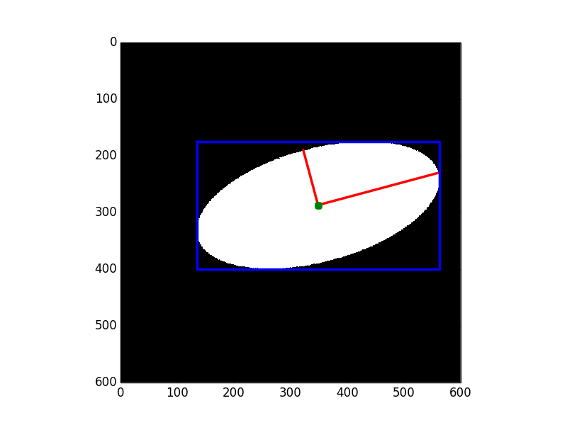

This example shows how to measure properties of labelled image regions.

import math
import matplotlib.pyplot as plt
import numpy as np
from skimage.draw import ellipse
from skimage.morphology import label
from skimage.measure import regionprops
from skimage.transform import rotate
image = np.zeros((600, 600))
rr, cc = ellipse(300, 350, 100, 220)
image[rr,cc] = 1
image = rotate(image, angle=15, order=0)
label_img = label(image)
regions = regionprops(label_img)
fig, ax = plt.subplots()
ax.imshow(image, cmap=plt.cm.gray)
for props in regions:
y0, x0 = props.centroid
orientation = props.orientation
x1 = x0 + math.cos(orientation) * 0.5 * props.major_axis_length
y1 = y0 - math.sin(orientation) * 0.5 * props.major_axis_length
x2 = x0 - math.sin(orientation) * 0.5 * props.minor_axis_length
y2 = y0 - math.cos(orientation) * 0.5 * props.minor_axis_length
ax.plot((x0, x1), (y0, y1), '-r', linewidth=2.5)
ax.plot((x0, x2), (y0, y2), '-r', linewidth=2.5)
ax.plot(x0, y0, '.g', markersize=15)
minr, minc, maxr, maxc = props.bbox
bx = (minc, maxc, maxc, minc, minc)
by = (minr, minr, maxr, maxr, minr)
ax.plot(bx, by, '-b', linewidth=2.5)
ax.axis((0, 600, 600, 0))
plt.show()
STDOUT
STDERR
Python source code: download (generated using skimage 0.11dev)
IPython Notebook: download (generated using skimage 0.11dev)